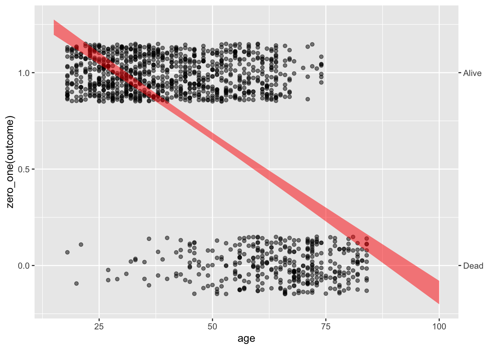
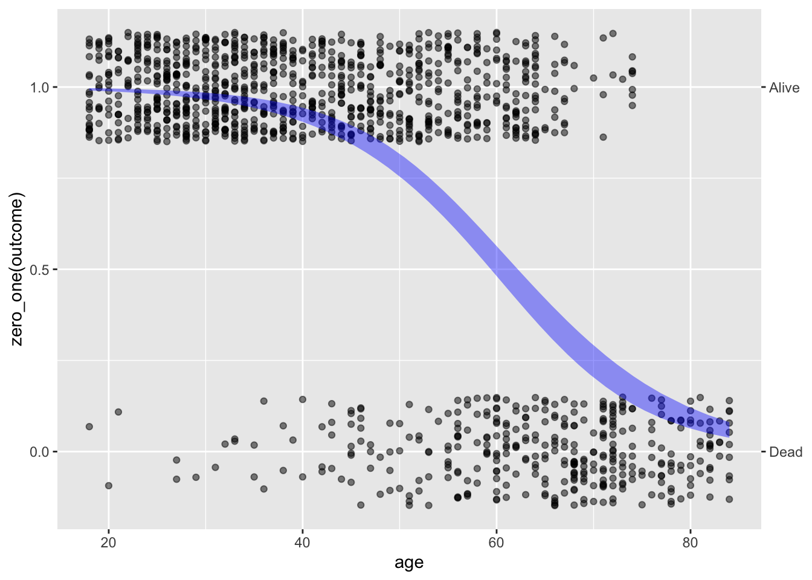

In everyday language, “risk” refers to a dangerous or unwelcome outcome. We talk about the “risk of heart disease,” “risk of bankruptcy,” or another unwelcome outcome. To apply risk to a positive outcome is non-idiomatic. For instance, for a person wanting to have a baby, we don’t talk about the “risk of pregnancy” but about the “chances of becoming pregnant.”
The statistics of risk and “chances of” are equivalent. It matters to the decision-maker whether the outcome referred to is positive or negative, but it makes no difference to the mathematics.
Usually, the outcomes described by “risk” or “chances of” are categorical. In these Lessons, we’ll consider only two-level categorical variables. Generically, the levels of the categorical variable might be “unwelcome” and “not unwelcome,” but they might be more specifically named, say, “death” and “survival,” or “lung disease” and “not.” Risk or “chances of” involve two categories, typically one unfavored and the other favored.
We have been building models of such categorical output variables from the start of these Lessons. For the zero-one categorical variables we have emphasized, the model output is in the form of a probability: the probability of the outcome of the event being “one” (or whatever actual level “one” corresponds to.) If we assign one for “death” and zero for “survival,” the probability which is the output of a model is a risk, but other than the choice of zero-one assignment, there is no mathematical difference (in statistics) between a risk and a probability.
Risk often depends on other factors, often called “risk factors.” In our modeling framework, such risk factors are merely explanatory variables. For instance, a study of the impact of smoking on health might use outcome represented by a categorical response variable with levels “death” or “survival.”
Risk vocabulary
In statistical terms, a risk is a probability associated with an outcome.
A full description of risk looks much like a prediction: a complete list of possible outcomes, each associated with a probability, which we’ll call a risk level.
A risk level is properly measured as a pure number, e.g. 30 percent.
Being a probability, such numbers must always be between 0 and 1, or, equivalently, between 0 and 100 percent.
There are two ways of referring to percentages, e.g. 30 percent vs 30 percentage points. When talking about a single risk, these two are equivalent. However, “percentage points” should be reserved for a particular situation: Describing a change in absolute risk.
For simplicity, we will focus on situations where there are only two outcomes, e.g. alive/dead, success/failure, cancer/not, diabetes/not.
Since there are only two outcomes, knowing the probability p of one outcome automatically sets the probability of the other outcome.
One of the outcomes is worse than the other, so we usually take the risk to be the worse outcome and its probability.
A risk factor is a condition, behavior, or such that changes the probability of the (worse) outcome. Just to have concise names, we will use this terminology:
baseline risk (level): the risk (level) without the risk factor applying.
augmented risk (level): the risk (level) when the risk factor applies.
A risk ratio is exactly what the name implies: the ratio of the augmented risk to the baseline risk.
For instance, suppose the baseline risk is 30% and the augmented risk is 45%. The risk ratio is 45/30 = 1.5 = 150 percent. Risk ratios are often greater than 1, which should remind us that a risk ratio is a different kind of beast from a risk, which can never be larger than 1.
There are two distinct uses for risk factors:
Draw attention to a factor under our control (e.g. skiing, biking, using a motorcycle, smoking) so that we can decide whether the augmentation in risk is worth avoiding.
Establish the baseline risk in a relevant way (e.g. our age, sex, and so on).
For decision-making regarding a risk factor, it is most meaningful to focus on the change in absolute risk, that is, the difference between the augmented risk and the baseline risk.
Example: The risk ratio for the smoking risk factor is about 2.5/1 for ten-year, all-cause mortality. If the baseline risk is 3 percentage points, the augmented risk is 7.5%. Consequently, the augmentation in risk for smoking is (2.5-1) x 3% = 4.5 percentage points. On the other hand, if the baseline risk were 30 percentage points, the 2.5 risk ratio increases the risk by 45 percentage points.
Notice that we are describing the augmentation in risk as “percentage points.” Always use “percentage points” to avoid ambiguity. If we had said “45 percent,” people might mistake the augmentation in risk as a risk ratio of 1.45.
Question
Why bother to present risk factors in terms of risk ratios when for decision-making it’s better to use the augmentation in risk in percentage points?
Answer: Because the same risk factor can lead to different amounts of augmentation depending on the baseline risk. If there are multiple risk factors, then adding up such augmentations can potentially lead to the risk level exceeding 100%.
Modeling risk
The linear models we have been using accumulate the model output as a linear combination of model inputs. Consider, for instance, a simple model of fuel economy based on the horsepower and weight of a car:
mpg_mod <- mtcars |>model_train(mpg ~ hp + wt) mpg_mod |>conf_interval()
term
.lwr
.coef
.upr
(Intercept)
33.9573825
37.2272701
40.4971578
hp
-0.0502408
-0.0317729
-0.0133051
wt
-5.1719160
-3.8778307
-2.5837454
The model output is a sum of the intercept and each of the other coefficients multiplied by an appropriate value for the corresponding variable. For instance, a 100 horsepower car weighting 2500 pounds has a predicted fuel economy of 37.2 - 0.032*100 - 3.88*2.5=24.3 miles per gallon. If we’re interested in making a prediction, we often hide the arithmetic behind a computer function, but it is the same arithmetic:
The wt variable in the training data mtcars is measured in units of 1000 lbs, so a 2500 pound vehicle has a wt value of 2.5.
mpg_mod |>model_eval(hp =100, wt =2.5)
hp
wt
.lwr
.output
.upr
100
2.5
18.91817
24.3554
29.79263
The arithmetic, in principle, lets us evaluate the model for any inputs, even ridiculous ones like a 10,000 hp car weighing 50,000 lbs. There is no such car, but there is a model output.
A 10,000 hp, 50,000 lbs ground vehicle does have a name: a “tank.” Common sense dictates that one not put too much stake in a calculation of a tank’s fuel economy based on data from cars!
mpg_mod |>model_eval(hp=10000, wt =50)
hp
wt
.lwr
.output
.upr
10000
50
-623.7013
-474.3937
-325.0862
The prediction reported here means that such a car goes negative 474 miles on a gallon of gas. That’s silly. Fuel economy needs to be non-negative; the output \(-474\) mpg is out of bounds.
A good way to avoid out-of-bounds behavior is to model a transformation of the response variable instead of the variable itself. For example, to avoid negative outputs from a model of mpg, change the model so that the output is in terms of the logarithm of mpg, like this:
The reported output, 3.17, should not be interpreted as mpg. Instead, interpret it as log(mpg). If we want output in terms of mpg, then we have to undo the logarithm. That’s the original purpose of the exponential function, which is the inverse of the logarithm.
exp() is a mathematical function, often written \(e^x\). We have also encountered a noise model with a similar name: the exponential noise model. exp() isn’t a noise model; it’s more like cos() or tan().
The logarithmic transform at the model-training stage does not not prevent the model output from being negative. We can see this by looking at the tank example:
mod_logmpg <- mtcars |>model_train(log(mpg) ~ hp + wt)mod_logmpg |>model_eval(hp=10000, wt=50)
hp
wt
.lwr
.output
.upr
10000
50
-28.04665
-21.6327
-15.21874
The model output is negative for the tank, but the model output corresponds to log(mpg). What will keep the model from producing negative mpg will be the exponential transformation applied to the model output.
The log transform fixes the out-of-bounds behavior but not the absurdity of modeling tanks based on the fuel economy of cars. The model’s prediction of mpg for the tank is 0.0000000004 miles/gallon, but real-world tanks do much better than that. For instance, the M1 Abrams tank is reported to get approximately 0.6 miles per gallon.
Logistic regression
When modeling a probability (as opposed to, say, “miles per gallon”) The out-of-bounds problem applies to both sides of the zero-to-one probability scale. Figure 21.1 shows an example: modeling the probability that a person in the Whickham data was still alive at the 20-year follow-up. Notice that the model values go above 1 for a young person and below 0 for an old person.

Figure 21.1: Using linear regression to model the probability of an outcome can lead to situations where the model values go out of the zero-to-one bounds for probability.
There is a fix for the out-of-bounds problem when modeling probability. Straight-line models (if the slope is non-zero) must inevitably go out of bounds for very large or very small inputs. In contrast, logistic regression bends the model output to stay in bounds. (Figure 21.2) The mathematical means for this is similar in spirit to the way we used the logarithmic and exponential transformation to keep the miles-per-gallon model from producing negative outputs. The transformation is described in Section 21.5

Figure 21.2: The output of a logistic regression model says within the bounds zero to one.
point_plot() and model_train() recognize situations where the response variable is categorical with two levels and automatically use logistic regression.
Risk
To summarize, for statistical thinkers, a model of risk takes the usual form that we have used for models of zero-one categorical models. All the same issues apply: covariates, DAGs, confidence intervals, and so on. There is, however, a slightly different style for presenting effect sizes.
Up until now, we have presented effect in terms of an arithmetic difference. As an example, we turn to the fuel-economy model introduced at the beginning of this lesson. Effect sizes are about changes. To look at the effect size of, say, weight (wt), we would calculate the model output for two cars that differ in weight (but are the same for the other explanatory variables). For instance, to know the change in fuel economy due to a 1000 pound change in weight, we can do this calculation:
The lighter car is predicted to get 24 mpg, the heavier car to get 19.5 mpg. The arithmetic difference in output \(19.5 - 24 = -4.5\) mpg is the effect of the 1000 pound increase in weight.
There is another way to present the effect, as a ratio or proportion. In this style, the effect of an addition 1000 pounds is \(19.5 / 24 = 81\%\), that is, the heavier car can go only 81% of the distance that the lighter car will travel on the same amount of gasoline. (Stating an effect as a ratio is common in some fields. For example, economists use ratios when describing prices or investment returns.)
A change in risk—that is, a change in probability resulting from a change in some explanatory variable—can be expressed as either an arithmetic difference or an arithmetic ratio. A special terminology that is used to name the two forms. “Absolute change in risk refers to the arithmetic difference. In contrast, a proportional change in risk is called a”relative risk.”
The different forms—absolute change in risk versus relative risk—both describe the same change in risk. For most decision-makers, the absolute form is most useful. To illustate, suppose exposure to a toxin increases the risk of a disease by 50%. This would be a risk ratio of 1.5. But that risk ratio might be based on an absolute change in risk from 0.00004 to 0.00006, or it might be based on an absolute change in risk from 40% to 60%. The latter is a much more substantial change in risk and ought to warrant more attention from decision makers interested.
Other ways to measure change in risk
It is important for measures of change in risk to be mathematically valid. But from among the mathematically valid measures, one wants to choose a form that will be the best for communicating with decision-makers. Those decision-makers might be the people in charge of establishing screening for diseases like breast cancer, or a judge and jury deciding the extent to which blame for an illness ought to be assigned to second-hand smoke.
Two useful ways to present a change in risk are the “number needed to treat” (NNT) and the “attributable fraction.” The NNT is useful for presenting the possible benefits of a treatment or screening test. Consider these data from the US Preventive Services Task Force which take the form of the number of breast-cancer deaths in a 10-year period avoided by mammography. The confidence interval on the estimated number is also given.
Age
Deaths avoided
Conf. interval
40-49
3
0-9
50-59
8
2-17
60-69
21
11-32
70-74
13
0-32
The table does not give the risk of death, but rather the absolute risk reduction. For the 70-74 age group this risk reduction is 13/100000 with a confidence interval of 0 to 32/100000.
The NNT is well named. It gives the number of people who must receive the treatment in order to avoid one death. Arithmetically, the NNT is simply the reciprocal of the absolute risk reduction. So, for the 70-74 age group the NNT is 100000/13 or 7700 or, stated as a confidence interval, [3125 to \(\infty\)].
For a decision-maker, NNT presents the effect size in a readily understood way. For example, the 40-49 year-old group has an NTT of 33,000. The cost of the treatment could be presented in terms of anxiety prevented (mammography produces a lot of false positives) or monetary cost. The US Affordable Care Act requires health plans to fully cover the cost of a screening mammogram every one or two years for women over 40. Those mammograms each cost about $100-200. Consequently, the cost of mammography over the ten-year period (during which 5 mammograms might be performed) is roughly \(5\times \$100 \times 33000\) or about $16 million per life saved.
The attributable fraction is a way of presenting a risk ratio—in other words, a relative risk—in a way that is more concrete than the ratio itself. Consider the effect of smoking on the risk of getting lung cancer. According to the US Centers for Disease Control, “People who smoke cigarettes are 15 to 30 times more likely to get lung cancer.” This statement directly gives the confidence interval on the relative risk: [15 to 30].
The attributable fraction refers to the proportion of disease in the exposed group—that is, smokers—to be attributed to expose. The general formula for attributable fraction is simple. If the risk ratio is denoted \(RR\), the attributable fraction is \[\text{attributable fraction} \equiv \frac{RR-1}{RR}\] For a smoker who gets lung cancer, the confidence interval on the attributable fraction is [93% to 97%].
For second-hand smoke, the CDC estimates the risk ratio for cancer at [1.2 to 1.3]. For a person exposed to second-hand smoke who gets cancer, the attributable fraction is [17% to 23%]. Such attributions are useful for those, such as judges and juries, who need to assign a level of blame for a bad outcome.
Probability, odds, and log odds
A probability—a number between 0 and 1—is the most used measure of the chances that something will happen, but it is not the only way nor the best for all purposes.
We use the word “odds” in everyday language. The phrase “What are the odds?” expresses surprise at an unexpected event. The setting for odds is an event that might happen or not: the horse Fortune’s Chance might win the race, otherwise not; it might rain today, otherwise not; the Red Sox might win the World Series, otherwise not. More generally, the setting for odds is an event with a two-level categorical outcome.
Odds are usually expressed as a ratio of two numbers, as in “3 to 2” or “100 to 1”, written more compactly as 3:2 and 100:1. Of course, a ratio of two numbers is itself a number. We can write odds of 3:2 simply as 1.5 and odds of 100:1 simply as 100.
The format of a probability assigns a number between 0 and 1 to the chances that Fortune’s Chance will win, or that the weather will be rainy, or that the Red Sox will come out on top. If that number is called \(p\), then the chances of the “otherwise outcome” must be \(1-p\). The event with probability \(p\) would be reformatted into odds as \(p:(1-p)\). No information is lost if we treat the odds as a single number, the result of the division \(p/(1-p)\). Thus, when \(p=0.25\) the corresponding odds will be \(0.25/0.75\), in other words, 1/3.
A big mathematical advantage to using odds is that the odds number can be anything from zero to infinity; it’s not bounded within 0 to 1. Even more advantageous for accumulating risk is to arrange the transform so that the output can be any number, positive or negative. This is done by transforming the odds with the logarithm function. The end product of this two-stage, odds-then-log transformation is called the “log odds.” We will come back to this later.
The model coefficients in logistic regression (e.g. Figure 21.2) are in terms of log-odds. For example, consider the coefficients for the model zero_one(outcome, one = "Alive") ~ age trained on the Whickham data frame.
Whickham |>model_train(zero_one(outcome, one ="Alive") ~ age) |>conf_interval()
Waiting for profiling to be done...
term
.lwr
.coef
.upr
(Intercept)
6.60
7.40
8.20
age
-0.14
-0.12
-0.11
For a hypothetical 20-year old, the model output will be
\[7.403 - 0.1218\times 20 = 4.967\]
Obviously, 5.05 is not a probability, and it’s not intended to be. Instead, 5.05 is the logarithm of an odds. To convert 5.05 to the corresponding probability involves two steps:
Undo the logarithm: exp(4.967) is 143.6. This is an odds, not yet a probability.
Convert the odds to a probability. The formula for this is \(p = \frac{odds}{odds+1} = 143.6 / 144.6 = 0.993\).
Now consider a hypothetical 100-year-old. The model output is
\[7.490 - 1.22 \times 100 = -114.5 .\] As before, this is in terms of log odds. Using the method for conversion to probability, we get \(odds = e^{-114.5} = 1.87 \times 10^{-50}\). This corresponds to a vanishingly small probability. In other words, according to the model, the probability of the 100-year-old being alive 20 years later is practically zero. (But not negative!)
The model_eval() function recognizes when its input is a logistic regression model and automatically renders the model output as a probability. (The default for model_eval() is to include a prediction interval. But there is no such thing when the model value is itself a probability.)
A simple, rough-and-ready way to interpret coefficients in a logistic regression model exists. The intercept sets the baseline risk. A positive intercept means a baseline probability greater than 0.5; a negative intercept corresponds to a baseline probability less than 0.5. For each of the other coefficients, a positive coefficient means an increase in risk, while a negative coefficient corresponds to a decrease in risk.